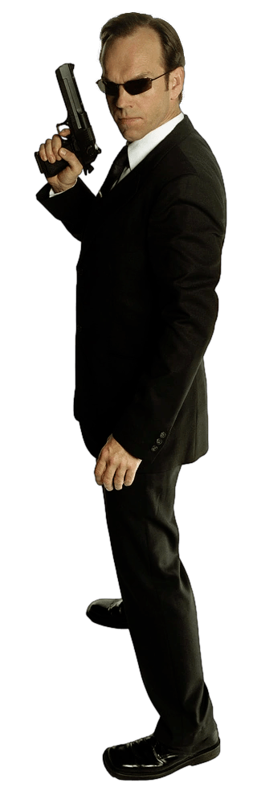

Agent Smith
Smith's physical description is that he is a tall man with brown hair. He always appears in a suit and with an earpiece, with which he always carries a gun.
Agent Smith is a former Matrix Agent and the main evil character of the trilogy. After initially being destroyed by Neo he became an exile and manifested as a computer virus with the uncanny ability to copy himself into the minds of Bluepills, Redpills and programs alike.
Smith was an agent of the system and, like other agents, had the function of watching over and maintaining the Matrix by eliminating possible threats to the stability of the system, which were mostly considered to be Redpills and obsolete programs. Agent Smith was personified as serious and almost invincible. He was also noticeably stronger and faster than the other Agents.